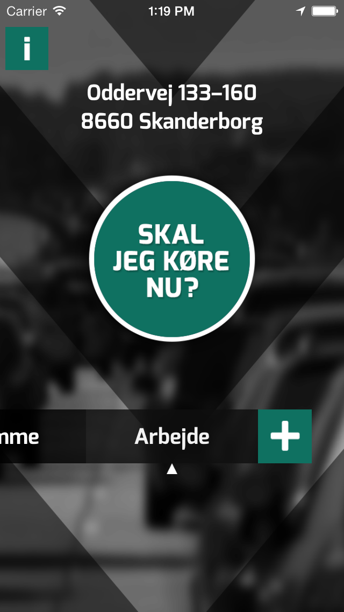
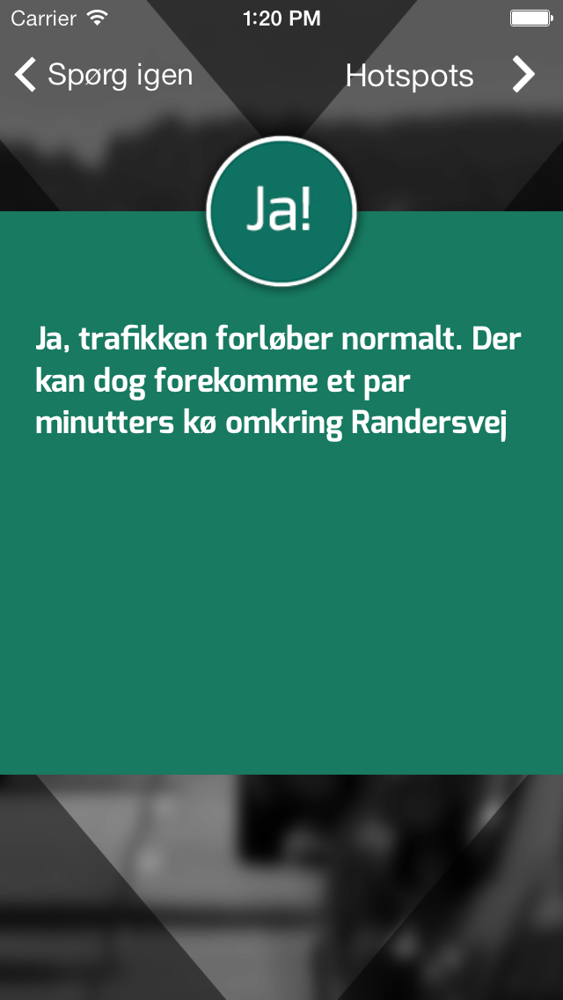
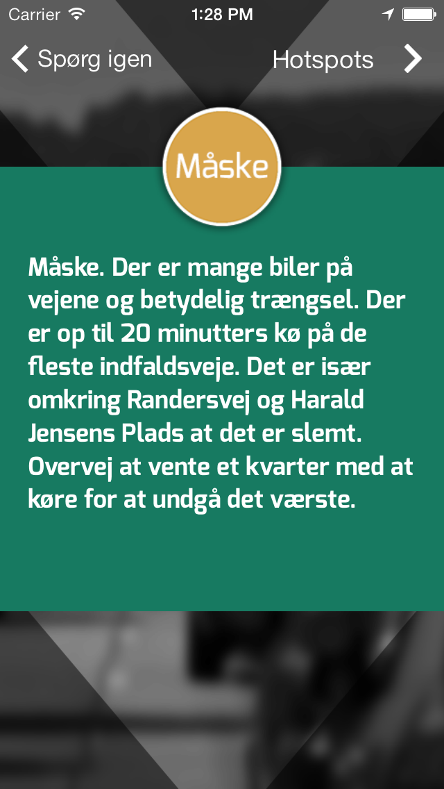
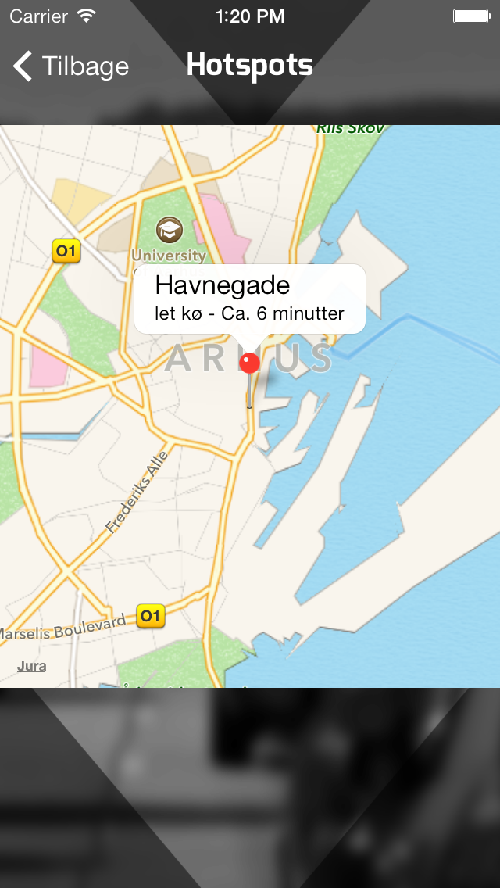

Should I Drive Now?
(The Danish title of the application and project was “Skal Jeg Køre Nu?”)




The road systems and traffic infrastructure is highly instrumented with devices to capture data on flow, incidents, congestion etc. These data are used by the planning departments and vendors to develop their strategy and measure and respond to changes in traffic patterns. In this project, we wanted to investigate a use-case for some of this data as open data: How could we develop an application that could support citizens in their daily lives based on open data? or more specifically how could citizens interact more or less directly with urban data?.
The answer was an application where users could query live traffic data and receive driving recommendations based on congestion and flow data. The screenshots above illustrate the flow of the application: First, (Figure 1 (a)), the user selects a predefined destination, e.g. work, and then queries the service by pressing the “Should I Drive Now?” button. Then (Figure 1 (b) and Figure 1 (c)) the service would calculate the commute time between the current location and chose destination based on real-time traffic data. Then it compares the current commute time with a precalculated ideal (normal traffic flow). If the delta was acceptable, the recommendation would be “yes”. If the route is congested, the application would recommend “maybe”, with some detailed information on specific hotspots and a recommendation on “perhaps wait 15 minutes to depart”. If there is a gridlock, the application would recommend similar to “maybe”, but add a recommendation to change commute patterns for subsequent days, e.g. “if you can schedule your drive early next time, then you can avoid congestion”.
As an additional feature (and to provide an explanation), users could also see a map with hotspots on the current traffic situation (Figure 1 (d))
Smart city and open data context
This project also served as a deliverable and demonstrator in a local smart city initiative Smart Aarhus1. I was a member of the secrateriat and working group on open data.
In this context, the application should demonstrate
- A locally developed “Smart City” application
- A use-case for open data
- An internal instrument2 to motivate and understand the process of working with open data
As part of the development of the application, I developed some of the early integrations between the Blip Systems real-time tracking software and the CKAN open data platform. The data is still maintained and available on the, now Danish, CKAN open data platform.
Drive now application design
The development of the development of the project happened in close collaboration with people from the municipal traffic department and Smart Aarhus. The concept was developed during an inspiration card workshop (Halskov & Dalsgård, 2006) and further refined through a series of design meetings.
I was design lead and developer on the project, with frequent support and input from Smart Aarhus and the participants from the municipal traffic department.
Jacob Rosenberg developed the graphics for the interface and Martin Brynskov provided input on tricky design decisions and project management.
Application implementation
This is the largest system I have developed independently, with quite a lot of components and steps. The container diagram below shows the different components.
For this project, I had to learn almost all the technologies from the get-go, including Objective-C, working with GIS data, Postgresql PostGIS module, Hiroku and to some extend CoffeeScript (I had only worked in NodeJS of the two at the time). Deploying the application to Hiroku and Apple’s appstore was also an experience. Apple’s application review procedure was just different back then.
I got several requests on making an Android version of the application, but at that point the project did not have any additional funding. I started developing it, but it was just not feasible at the time.
Outcomes and publication
The application proved useful to commuting citizens; on its release in 2014, it got almost 5000 downloads and unique users in the first six months. The underlying real-time traffic data was made available through the local data platform as part of the project and is still available today.
There is more about the project in my Master thesis “Digital Urban Development: Reconceptualising the Smart City as a Design Challenge from an Interaction Design Perspective”. We also discuss it in our paper on “Working Across Boundaries in Smart City Research”
Press
Danish news published multiple pieces on the project, e.g. Ing.dk and Stiftidende, it was on the local news and was part of a larger PR event for Smart Aarhus, see this short pamphlet from Aarhus municipalit.
References
Halskov, K., & Dalsgård, P. (2006). Inspiration card workshops. Proceedings of the 6th Conference on Designing Interactive Systems, 2–11.
Footnotes
Back then it was a strong helix collaboration between the municipality, university, region and private sector. I have not followed it for years, but today it seems more like a municipal project with a more traditional governmental focus (and less experimental and engaging).↩︎
This proved to be the main contribution and role for the application. To show-case and give leverage to a few of the efforts in Smart Aarhus and the open data initiative. I throught me the strategic power of a demonstrator.↩︎